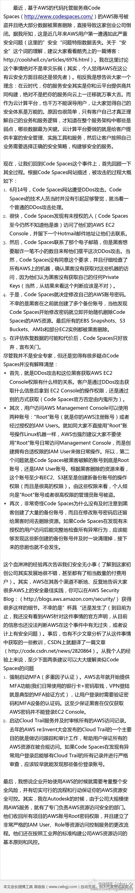

#社区运营# 现在面临的问题是信息太多，以前有专门编辑帮着筛选信息，现在帮助筛选信息的，又多了一个角色，朋友或熟人。而且，我们会更倾向相信朋友或熟人你推荐的信息。- 围绕熟人信息推荐，有蛮多文章可做。

Ada李力
2014-08-02
Ada李力
2014-08-02
今早起来后就各种不爽，找茬。吼昨天的碗没洗，他说你也懒过的，我就没说过你；吼他不带闺女出去玩，他说没觉得哪里好玩；我拖了地，一身臭汗，又心里怨他不能吹空调，家里整日30度以上；去趟超市也生气，他总说我买得多……这会儿在琢磨，怎么今天怨气冲天了呢？
Ada李力
2014-08-02
为了让自己情绪好些，用玻璃杯喝冰镇可乐。
Ada李力
2014-08-02
得多储备几个能让自己迅速开心起来的小妙方。对我来说，好吃好喝一顿起效最快，但副作用也很大，已经渐渐少用。这几个无害且执行起来方便：出身臭汗再洗个澡；外出兜兜风；看喜剧电影轻松乐乐；找个出气筒……
Ada李力
2014-08-02
心情不爽，难道原因还包括被妹妹发来的刚完工游泳池照刺激到？可是我没觉得自己羡慕妹妹在美国的生活呀，当然我也为她高兴。

Ada李力
2014-08-02
处处可见精彩人生。
@华尔街见闻APP:
【探索、行动、给予、思考：西蒙斯告诉你何为人生赢家】此人：23岁戴博士帽；26岁为美国政府破译密码；30岁任数学系主任；37岁获几何学最高奖；44岁成立传奇对冲基金；花甲之年两次经历丧子之痛；跻身福布斯富豪榜的72岁，承诺捐出大部分财产。 他是西蒙斯，真正的人生赢家。详见 探索、行动、给予、思考：西蒙斯告诉你何为人生赢家
探索、行动、给予、思考：西蒙斯告诉你何为人生赢家
Ada李力
2014-08-02
安全无小事，给自己再次提个醒。
@徐桂林_Sydney_Xu:
最近，基于AWS的代码托管服务商Code Spaces的AWS账号被盗且绝大部分数据被黑客删除，直接导致该公司倒闭。据我所知，这是近几年来AWS用户第一次遭遇如此严重安全问题。我关注这个事情绝对不是幸灾乐祸，而是想告诉大家一个理念：在云时代，你的服务安全其实是你和云平台共同构建，缺一不可。详见长微博
- 